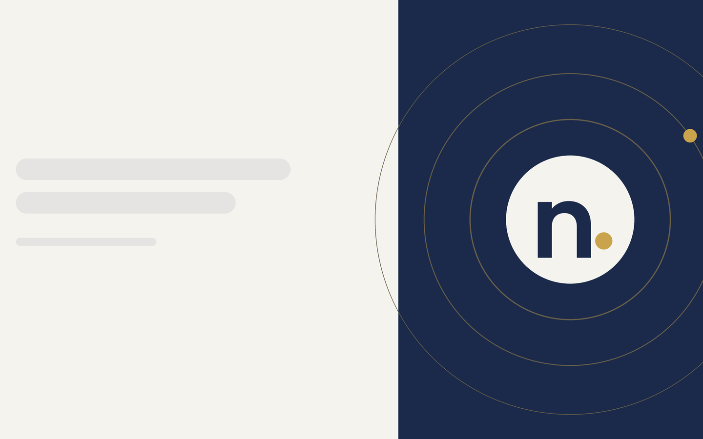

Insights
WordPress vs custom website for small business
Cost, speed, security, SEO, and editing compared, so you can pick the right fit.
WordPress vs custom websites: a deeper look
Cost
WordPress itself is free, but a WordPress website still needs hosting, a theme, plugins, and someone to set it up. Custom development can cost more for complex features, but a simple custom site for a small business can be priced competitively. Our standard custom build is $1,000 one-time.
Speed and performance
WordPress performance depends on the theme and plugins. Every plugin adds code. A custom site loads only what it needs, which usually means faster pages and better Core Web Vitals.
Security and maintenance
WordPress is the most popular CMS, so it is a common target. Themes and plugins need regular updates. A custom static site has fewer moving parts to patch.
Flexibility
WordPress offers plugins for almost anything. A custom website can do anything too, but each feature has to be built. For most local service businesses, the needed features are simple: pages, forms, click-to-call, and a blog.
Editing content
WordPress has a familiar dashboard. Our custom builds include a simple content editor, so you can update text without touching code.
SEO
Both WordPress and custom websites can rank. What matters is clean structure, fast pages, and good content. A custom build lets the site structure follow your SEO plan.
When to choose WordPress
- You need a large blog or membership features
- Your team already knows WordPress
- You rely on a specific plugin
When to choose a custom website
- You want speed and fewer updates
- You run a local service business with a focused set of pages
- You want a site built around your SEO plan
Our recommendation for small businesses
For many small businesses, a custom website is the simpler choice. If WordPress is a better fit, we will say so on the strategy call.
After launch, the $150 per month care plan covers hosting, security, updates, and routine edits, so the site keeps working while you run the business.
Should your small business use WordPress or a custom website? Both can work well. This guide compares cost, speed, security, maintenance, SEO, and editing, so you can choose the right fit for your business website.
What is WordPress?
WordPress is a free, open-source content management system. It powers a large share of websites worldwide. A WordPress website is usually built from a theme, which controls the design, plus plugins, which add features like forms, SEO tools, booking, and ecommerce. WordPress offers a familiar dashboard and a huge ecosystem of WordPress developers, themes, and plugins.
What is a custom website?
A custom website is built for your business with only the code it needs. It may be hand-coded, built with a framework, or generated as a fast static site with a simple content editor. Our standard builds are custom static sites with a simple editor for updating text.
WordPress vs custom website: side by side
Upfront cost
WordPress itself is free, but someone still has to set up hosting, choose or build a theme, install plugins, and add content. Custom development can cost more for complex features. For a focused local business site, a custom build can be priced competitively: our standard custom build is $1,000 one-time.
Ongoing cost
WordPress sites need hosting, regular WordPress core, theme, and plugin updates, backups, and security. Premium plugins often renew yearly. Custom static sites have fewer moving parts, but still need hosting and edits. Our $150 per month care plan covers either.
Speed
WordPress performance depends heavily on the theme and plugins. Each plugin adds code, and heavy page builders can slow pages down. A custom site loads only what it needs, which usually means faster pages on phones.
Security
Because WordPress is so popular, it is a frequent target. Most WordPress security problems come from outdated plugins or themes. A custom static site has no database or plugin stack exposed to the public, which reduces the attack surface.
Flexibility
WordPress has plugins for almost everything. That is its biggest strength. A custom site can do anything too, but each feature is built rather than installed. For most local service businesses, the needed features are simple: service pages, forms, click-to-call, maps, and a blog.
Editing
The WordPress dashboard is familiar to many people. Our custom builds include a simple content editor, so you can update text without code. For larger changes, routine edits are included in the care plan.
SEO
Both WordPress and custom websites can rank well. Search engines care about content, structure, speed, and links, not the platform. WordPress relies on SEO plugins for many settings; a custom build puts titles, headings, schema, and structure in place from the start, following your SEO plan.
Ownership and lock-in
With either option, make sure you own the domain, hosting account, and content. Avoid proprietary builders that make it hard to leave.
When to choose WordPress
- You need a large blog with many authors
- You need membership, learning, or complex ecommerce features available as plugins
- Your team already knows WordPress well
- You depend on a specific WordPress plugin
When to choose a custom website
- You run a local service business with a focused set of pages
- Speed and security are priorities
- You want fewer updates and fewer things to break
- You want the site structure built around your local SEO plan
Common myths
"Custom websites are always expensive"
Complex custom development can be. A focused small business site does not have to be.
"WordPress is always cheaper"
The software is free, but themes, plugins, hosting, maintenance, and fixes are not.
"You cannot edit a custom website"
Many custom sites, including ours, include a content editor.
"WordPress is bad for SEO" or "custom is bad for SEO"
Neither is true. Execution matters more than platform.
Moving from WordPress to custom, or the other way
Switching platforms is common. When moving a site, keep the same URLs where possible or set up redirects, carry over content, and check titles and headings, so rankings are protected.
Our recommendation for small businesses
For many small local businesses, a fast custom website is the simpler choice: fewer updates, fewer security worries, and a structure built for local search. If WordPress is a better fit for your needs, we will tell you on the strategy call and can quote WordPress development.
WordPress vs custom FAQ
Which is better for a small business, WordPress or custom?
It depends on the features you need and who will maintain the site. Local service businesses often do well with custom; content-heavy or plugin-dependent sites often fit WordPress.
How much does each cost with you?
Our standard custom build is $1,000 one-time. WordPress builds and larger projects get a fixed quote. Care is $150 per month for either.
Can I switch later?
Yes, with planning around URLs and redirects.
See our web design service or pricing, or book a call: Book a free strategy call
How to compare WordPress or custom website options
When business owners compare WordPress vs custom websites, the right answer depends on business needs. Themes and plugins make it easy to build a website quickly. Custom website development, or custom web design built from scratch by a developer, gives full control over code and Core Web Vitals. Look at the initial cost and the upfront investment, plus ongoing costs. Platforms like WordPress suit content-heavy sites; a custom build suits focused local website design. A good developer can help you build your website the right way for either option.